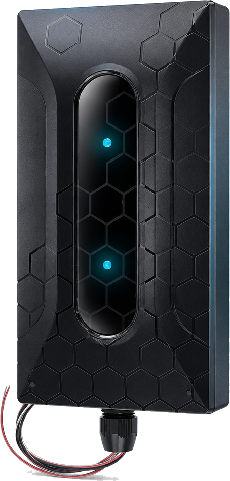
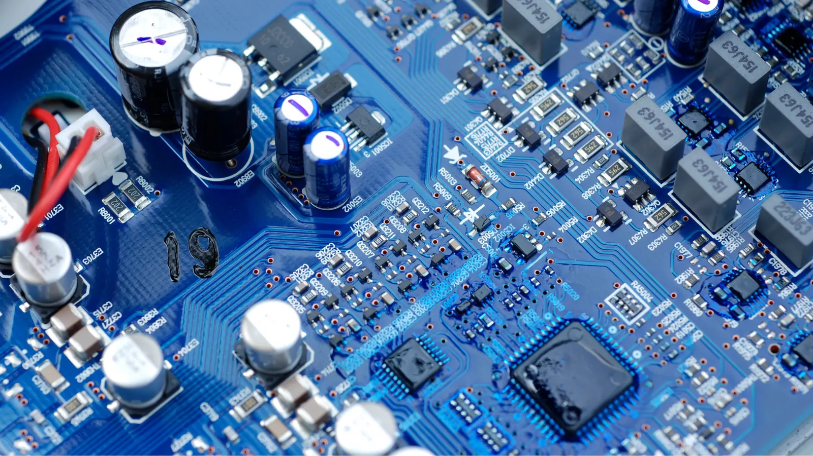
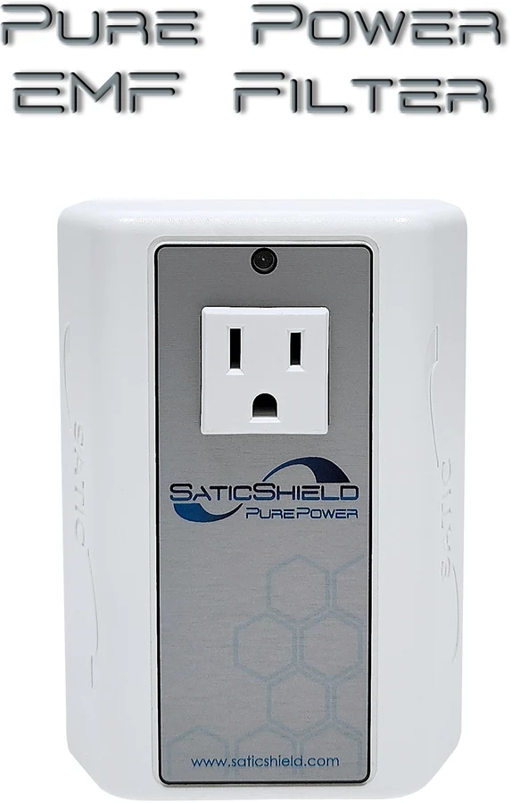
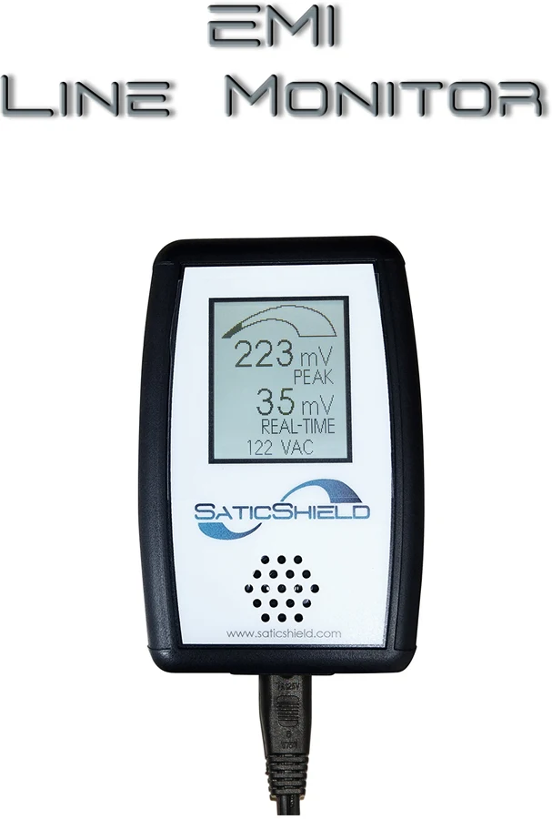
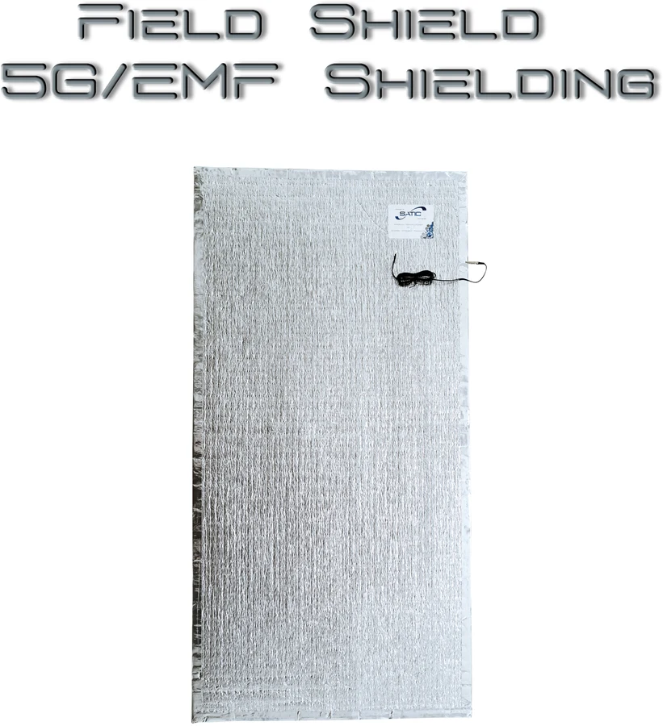
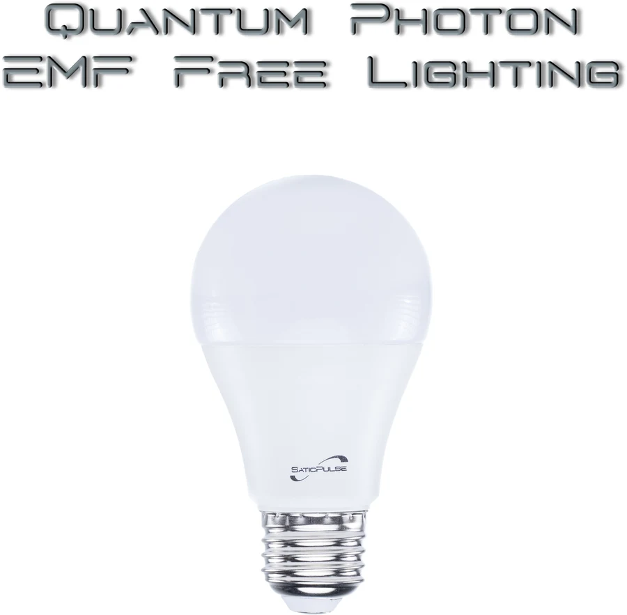
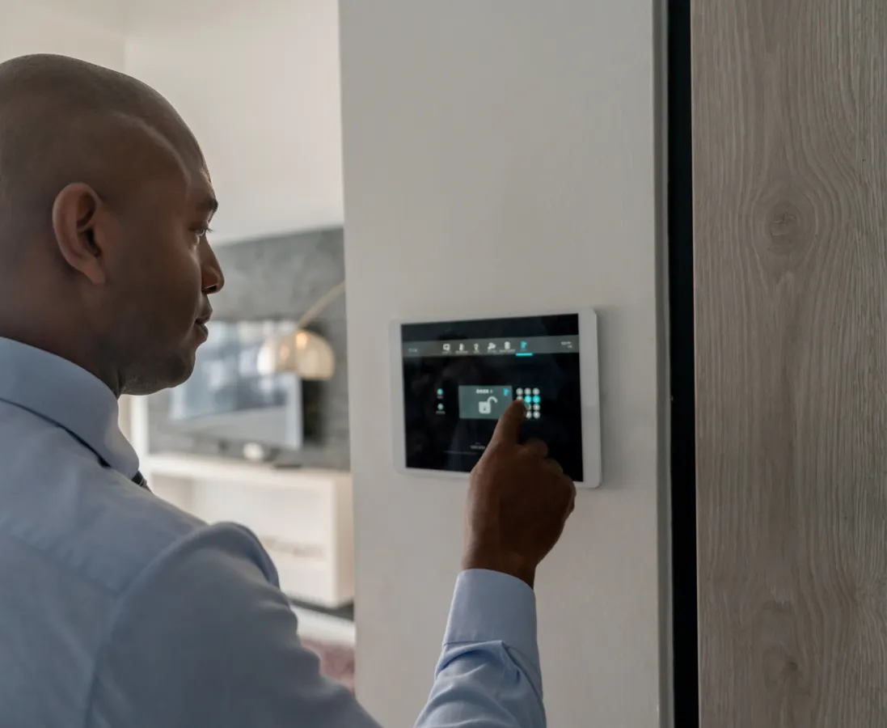
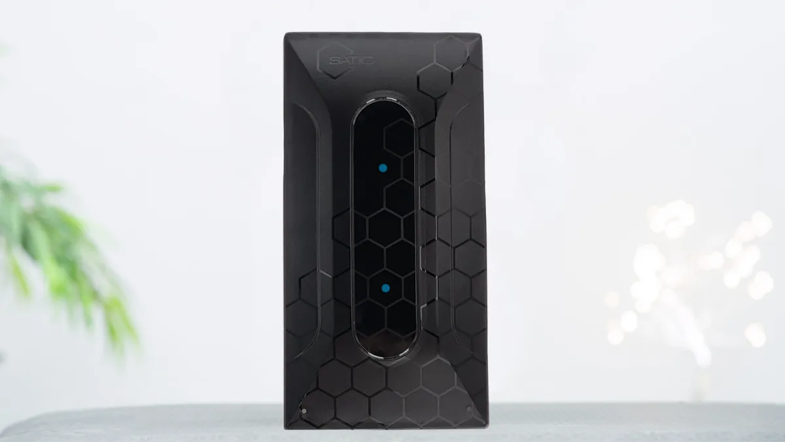

Measure the right thing
An EMI Line Monitor helps compare line-interference readings at an outlet. It is not a medical test or a measurement of every type of EMF.
You pay attention to what comes into your home. Your wiring deserves a closer look, too. SaticShield explains electrical line noise, measurement, filtration and field shielding, so you can understand the differences before choosing a solution.

Modern electronics can introduce harmonics and high-frequency line interference onto wiring. “Dirty electricity” is a broad shorthand, not a diagnosis. Harmonic distortion, power factor and radiated fields describe different electrical phenomena. Knowing the difference matters.
An EMI Line Monitor helps compare line-interference readings at an outlet. It is not a medical test or a measurement of every type of EMF.
Explore plug-in and installed filtration for unwanted electrical line noise. A line filter does not directly block radio-frequency waves.
FieldShield uses an eight-layer grounded construction for targeted shielding applications. Placement, dimensions and grounding matter; it is not interchangeable with line filtration.

“Create a universal solution—and lead the shift toward a clean-power paradigm.”
SATIC means Sinusoidal Waveform Technology Incorporated: engineered clean power. Since 2008, our privately owned team in Missoula has focused on engineered products and practical education. Understand the application, check the specifications and choose with a clear view of what each product does.
Meet the people behind the mission ↗In 81 seconds, discover why today’s electrical environment calls for a new approach—and the Montana-built technology designed to answer it.
Use SaticShield to understand the technology. For residential bundle selection, visit PurePower’s home finder. Commercial, dealer and project inquiries stay with our team.
Installed filtration for electrical line noise. Confirm the exact model, service compatibility and installation requirements; this is not a substitute for radio-frequency shielding.
Explore Power Perfect ↗
Line-noise filtration for standard 120V outlets. Review placement and suitability. Eight units form the proposed qualifying PurePower free-meter bundle, not a coverage guarantee.
View solution ↗
Compare line-interference readings before and after filtration, using the same outlet under similar conditions and following product instructions. Included free with the proposed qualifying PurePower bundles.
View monitor ↗
Eight-layer grounded shielding for targeted applications, including placement behind a headboard. Confirm dimensions, installation and grounding. Field shielding and electrical line-noise filtration are separate jobs.
View FieldShield ↗
High-efficiency LED lighting designed for ultra-low harmonic distortion.
View lighting ↗Own or rent? Home size? What brought you here? PurePower’s three-question home finder helps you explore a provisional residential bundle without an email gate.
Find my home’s starting point →We love what we do, back our claims, honor our warranties and stand behind the products we’ve made with pride.
THE SATIC TEAM · BIG SKY COUNTRY


No separate meter-first purchase required. Explore an SD or eight plug-in units with a free EMI Line Monitor through PurePower. Confirm suitability before purchase.